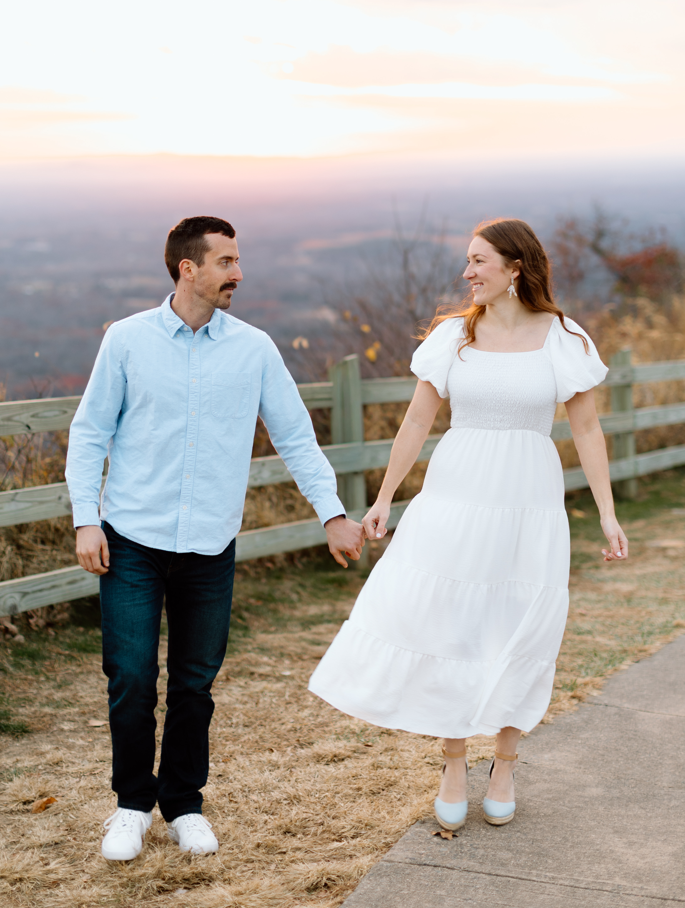

How It Started - by Zac
Back in 2019, a teammate of mine told me that he and his girlfriend had a friend who wanted to meet me.
He invited me to go out with them one night to introduce the two of us. I showed up that night and, well,
I don't think she wanted to meet me as badly as they said. To my surprise there was another girl tagging
along with us named Abby. As I introduced myself to her and got to know her I remember thinking
that there was something about her that I liked, something about her that just clicked. I recall telling my friend
later into the night "Man this is going terrible. But what's the deal with Abby? I like her".. but was told
she was in a long term relationship.
Fast forward 6 months. I posted a picture to my Instagram story and Abby replied. Come to find out she was now single
so I asked her out on a date. I was travelling full time so I was out of town every weekend. Our first date was on a
Thursday night. It went really well and I was hoping to go on a second, but was worried about my schedule and hers
as she lived over an hour away. The day after our first date, I flew to Atlanta for a race. Shortly after
arriving we were told the race was cancelled because of a pandemic that was breaking out so we flew back home. I texted
Abby on the way back "How about a second date this weekend?" and the rest was history.
Oh, and my teammate's girlfriend and friend from the first story? Both in the wedding party. I'm a big believer that
everything happens for a reason and without that awkward night I would have never married the love of my life.
Our Story
[Share a bit about your journey as a couple — highlights, milestones, funny moments, adventures. This is your chance to let guests get to know you both a little better.]
“"So they are no longer two, but one flesh. Therefore what God has joined together, let no one separate." - Matthew 19:6”